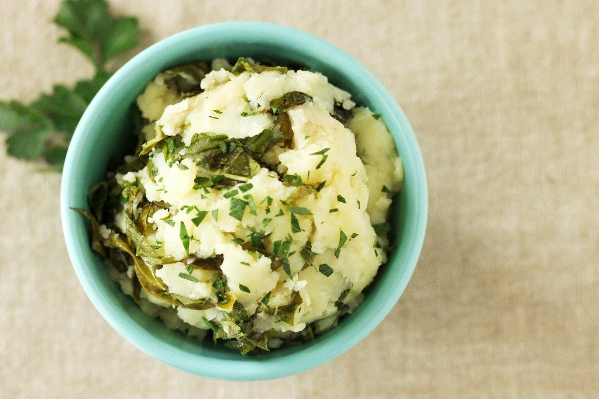

Mash Potatos

Mash potatos a clasic holiday dish and also a dish I have been enjoying for years a quote from my dad Mash potatos are tasty.
Tips
- How much salt you wanna put varries from person to person but personally I like plenty of salt because without it I feel it tastes a bit plain.
- This is not a actulal recipie but it might still taste ok.
Recipe
| Ingrediants |
Amount |
| Potatos |
Five |
| Butter |
One bar |
| Milk |
One cup |
| Salt |
Varries |
Instructions
- Wash and skin the potatos
- Put potatos in a bowl and smash until smasher can go through with little resistance
- Pour the cup of milk in and put in the butter too
- Smash again while puting in dashes of salt here and there until it all looks as one beautiful clump.
- This should take around 20-30 minutes and leave you with six servings.